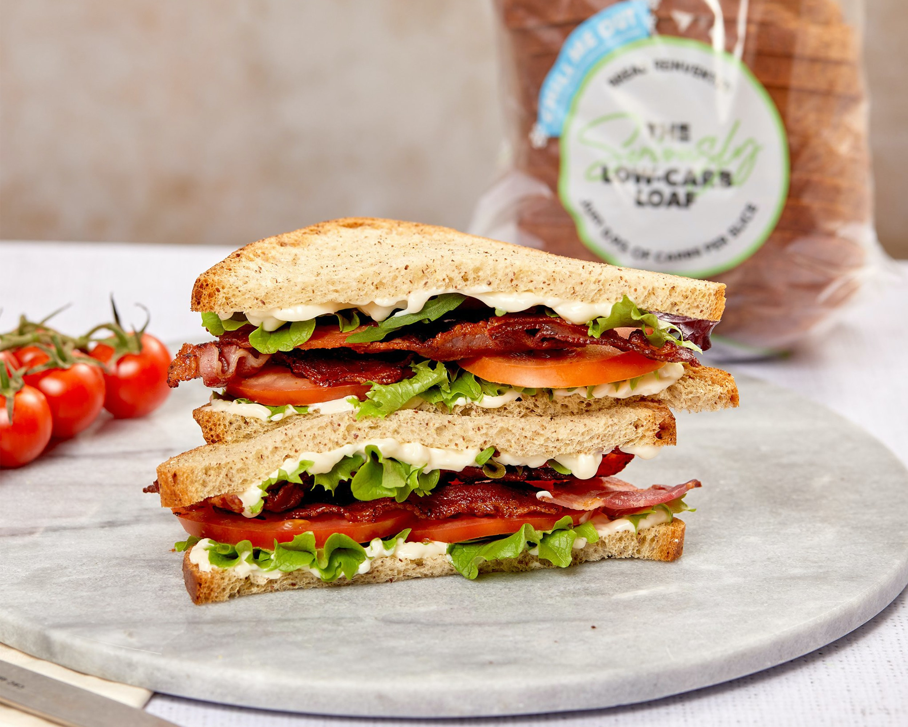

Sandwich

Description
The ultimate snack. Easy to prepare and make.
A food typically consisting of vegetables, sliced cheese or meat, placed on or between slices of bread, or more generally any dish wherein bread serves as a container or wrapper for another food type.
Ingredients
- Two Bread Slices
- Any Protein
- Your Favorite Fruits and/or Veggies
- Cheese (Optional)
Steps
- Choose a base for your sandwich. Place one slice of bread on a plate.
- Pick a spread. Using a butter knife, apply to one slice of your bread. You also can leave your bread dry and move on to the next step.
- Choose one or two protein foods to place on top of your spread or base of your sandwich.
- Add your favorite low-fat cheese (optional).
- Pile on fruits and veggies! Choose one or more.
- Place the remaining slice of bread on top and enjoy!